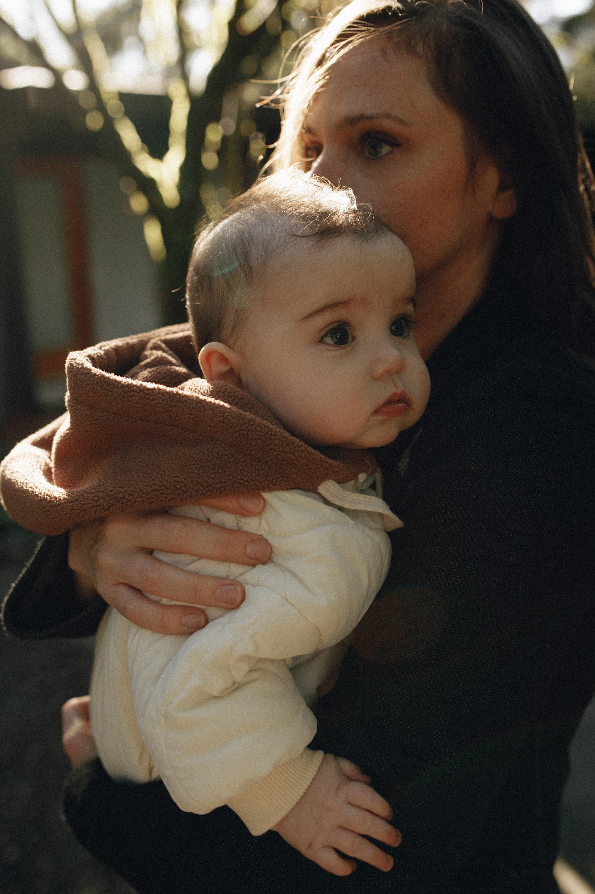

I'm a writer / designer / mom based in Tacoma, Washington, originally from Detroit, Michigan. My foundation is rooted in textile design, having worked for brands like Eddie Bauer and Hollister Co.
Seeking a change, I moved to experience design in 2016 and worked for Microsoft for the next eight years. Most recently I served as Staff Product Designer supporting John Maeda across GitHub, Azure, VS Code, and Microsoft Foundry. Working alongside John opened new creative doors for me. He introduced me to creative coding and encouraged me to focus more on creative writing which is where I'm focused today.
